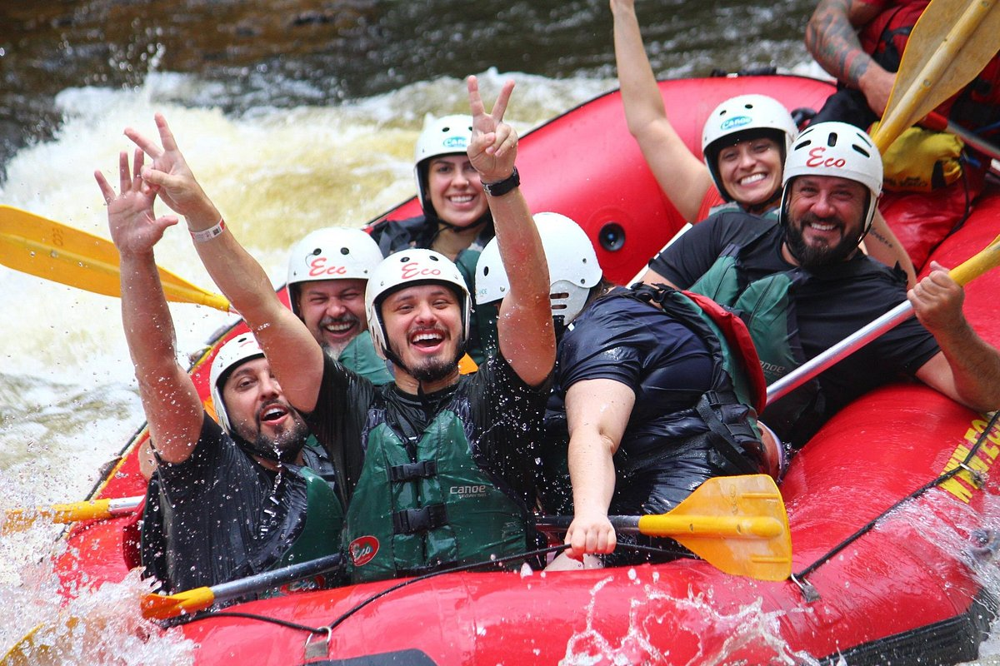
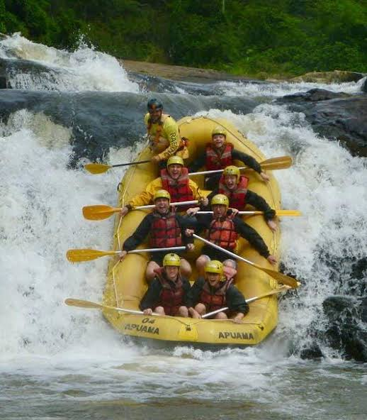
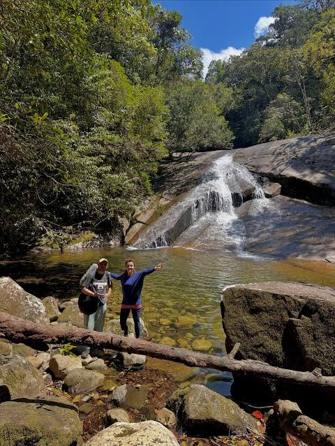
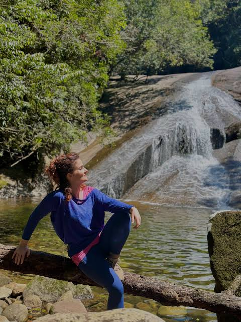
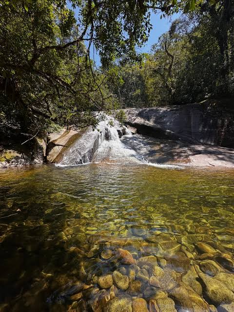

Nossa missão é proporcionar experiências inesquecíveis nas corredeiras mais emocionantes, unindo segurança máxima, respeito à natureza e pura adrenalina.


Nossa missão é proporcionar experiências inesquecíveis nas corredeiras mais emocionantes, unindo segurança máxima, respeito à natureza e pura adrenalina.
Fundada por apaixonados por esportes aquáticos, nossa empresa começou com apenas dois botes e o sonho de explorar os rios mais desafiadores da região.

Ao longo dos anos, crescemos e nos tornamos referência em ecoturismo, guiando milhares de aventureiros com instrutores certificados e equipamentos de ponta.



